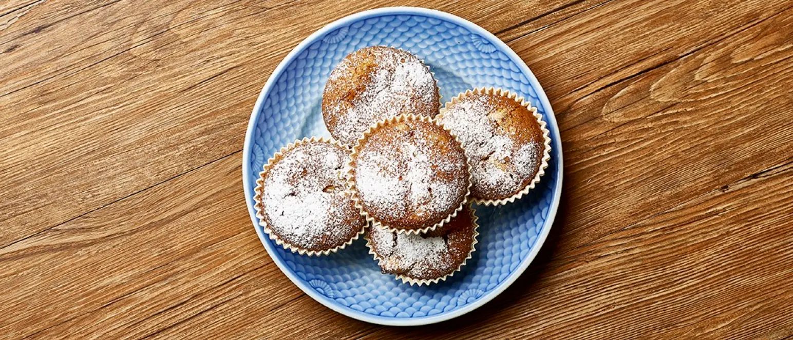

APPLE MUFFINS WITH GROUND-IVY
DIFFICULTY
COOKING TIME
PORTIONS
INGREDIENTS
- 200 g sugar
- 3 eggs
- 200 g wheat flour
- 2 tablespoons baking powder
- 100 ml yoghurt
- 500 ml flavor-neutral oil, such as grape seed
- 100 g powdered sugar
- 2 apples
-
A small handful of ground-ivy (or use, sweet woodruff, ground
ivy, or meadow sweet)
DIRECTIONS
-
Whisk together eggs and sugar in a bowl until white and foamy.
-
Add wheat flour, yoghurt, oil, and baking powder to the bowl
carefully folding with a rubber spatula until just incorporated.
Be careful not to over-mix.
-
Cut the apple in small cubes and chop the ground-ivy finely.
- Gently mix apple and ground-ivy into the dough.
-
Divide the dough evenly into 12 greased muffin molds. Bake at 200
degrees C (400 F) for 20-25 minutes or until a toothpick, inserted
into a muffin, comes out clear.
-
Let cool and sprinkle with powdered sugar. Serve warm or at room
temperature.